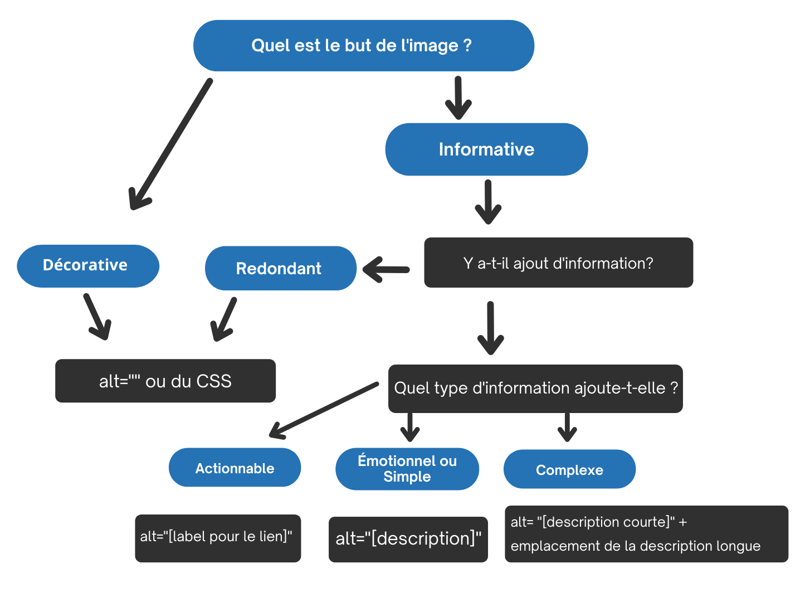

Arbre décisionnel en texte de remplacement
Cet arbre décisionnel décrit comment utiliser l’attribut alt de l’élément <img> dans différentes situations. L’arbre décisionnel ne couvre pas tous les cas. Par exemple, il ne couvre pas l’élément MathML, les groupes d’images, les cartes d’images et les autres approches de texte de remplacement pour les images fonctionnelles et complexes (p. ex., aria-label, aria-labelledby, figcaption, etc.). Pour obtenir des renseignements détaillés sur la fourniture d’équivalents textuels, reportez-vous aux sections précédentes.

Description textuelle de l’arbre décisionnel alt
- Quel est le but de l’image?
- Si elle est décorative : Utilisez
alt=""ou du CSS - Si elle est informative : Passez à l’étape 2.
- Si elle est décorative : Utilisez
- Y a-t-il ajout d'information?
- Si non : Utilisez
alt=""ou du CSS - Si oui : Passez à l’étape 3.
- Si non : Utilisez
- Quel type d’information ajoute-t-elle?
- Pour de l’information actionnable : Utilisez
alt="[label pour le lien]" - Pour de l’information émotionnelle ou simple : Utilisez
alt="[description]" - Pour de l’information complexe : Utilisez
alt="[description courte]"+ emplacement de la description longue
- Pour de l’information actionnable : Utilisez
Ressources WCAG connexes
Ressources WCAG connexes
Critères de succès
Techniques
- H2 : Combiner en un même lien une image et un intitulé de lien pour la même ressource (en anglais)
- H67 : Utiliser un attribut alt vide sans attribut title sur un élément img pour les images qui doivent être ignorées par les technologies d'assistance (en anglais)
- H36 : Utiliser un attribut alt sur une image utilisée comme bouton soumettre (en anglais)
- H37 : Utiliser l'attribut alt sur l'élément img (en anglais)
- G92 : Fournir une longue description d'un contenu non textuel qui remplit la même fonction et présente la même information (en anglais)
- G73 : Fournir une longue description dans un autre emplacement avec un lien y pointant qui est immédiatement adjacent au contenu non textuel (en anglais)
- G74 : Fournir une longue description dans le texte près du contenu non textuel avec une référence à l'emplacement de cette longue description dans la description courte (en anglais)